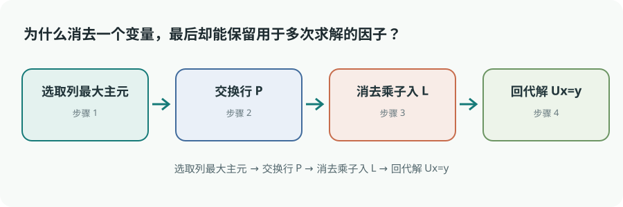

CHAPTER 2 · LINEAR EQUATION SOLVING
把高斯消去拆开看：行交换、乘子与三角求解
带选主元的 LU 分解是一个有精确定义的数据变换。
高斯消去不是把方程组的数字任意改写，而是连续对当前主元列执行行操作，使对角线下方逐步变成零。选主元时必须交换行，这些交换累积成置换矩阵 P；消去乘子进入 L，保留下来的上三角部分进入 U。
为什么消去一个变量，最后却能保留用于多次求解的因子？

1. 从两行消去看乘子
考虑 A=[[2,1],[4,3]]。第一列的第二行减去首行的 2 倍得到上三角行；乘子为 2，故可构造 L=[[1,0],[2,1]]、U=[[2,1],[0,1]]。直接在代数上验证 LU=A，即可看到乘子存放了消去的历史。
但数值计算如果首先遇到特别小的主元，乘子可能非常大。下一步不仅要记录消去，还必须为每一列选择稳定的主元候选。
来源：Demmel, Applied Numerical Linear Algebra §2.3；SciPy lu_factor (LAPACK getrf)。
2. 部分选主元的关系式是 PA=LU
在第 k 步，从第 k 列的行 k…n 中寻找绝对值最大元素，与第 k 行交换；置换矩阵 P 汇总这些行交换。该算法通常称作 GEPP。最终 PA=LU，L 是单位下三角，U 是上三角；行交换还要同步更新 L 中已经完成的乘子列。
这一约定下求解 Ax=b 的顺序为 Pb，前代 Ly=Pb，回代 Ux=y。部分选主元不是无条件避免增长的证明；它只保证消去乘子的绝对值在常规非奇异步骤中不超过 1。
3. 复杂度与多右端项
对一般 n×n 稠密矩阵，分解的主导算术成本为 (2/3)n³；每个右端项的前代和回代约为 O(n²)。不要把求逆作为默认实现，因为只要求 x 时显式形成 A⁻¹并不必要。
若 A 不变而 b 有很多组，重复使用 LU 因子比每组重新分解成本更低。大型生产环境通常依赖 LAPACK 或封装了 LAPACK 的库；本文手写版本仅用于揭示算法步骤与验证不变量。
4. 测试应检查恒等式而不只检查解
给出 A=[[0,2],[1,3]]，如果不交换第一行就会遇到零主元；部分选主元交换两行后仍可分解。程序检查 P@A 与 L@U 的范数差、L 的单位对角、U 的下三角零结构，并使用得到的因子求解一个给定 b。
精确恒等式的浮点实现可能有舍入偏差，因此检查采用与矩阵尺度相关的合理容差，而不是把每个浮点元素要求严格逐位相等。
交互判断：为什么消去一个变量，最后却能保留用于多次求解的因子？
切换情形，对照模型假设与结论。
首主元为 0：不能以它作为除数进行普通消去。